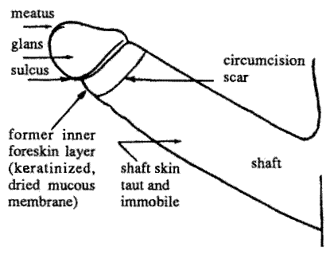

![[CIRP]](/gif/CIRP0.png)
Anatomy of the Penis, Mechanics of Intercourse
This page presents information that most parents are not aware of at the time they make the circumcision decision. Doctors usually do not provide this information.
If you are under 18, we recommend that you share and discuss this information with your parents.
For a further look at this anatomy, including photographs, visit Circumstitions (Hugh Young). Hugh's site also includes an excellent animation to illustrate retraction.
Dr John R. Taylor, co-author of two medical anatomical papers about the foreskin, explains the latest research at the Ridged Band website.

Fig. 1. Intact adult penis |
This illustration represents an average normal adult human penis. The head of the penis (glans) has a covering, called the foreskin (prepuce). This covering folds in on itself, forming a double layer. The foreskin is not a `flap' of skin on the end of the penis, and it is not `useless' or `redundant' skin. There is some natural variation in the length of the foreskin, which often covers a bit more or less of the glans than illustrated. In an average circumcised adult man, the area of skin that is missing because of penile reduction surgery would, when erect and unfolded, measure approximately three by five inches, or a little smaller than a postcard. That is about half the total skin of the penis. |
Structures of the penis
|
Fig. 2. Intact penis (hidden structures shown). |
The foreskin has twelve known functions.They are:
The above list was compiled from various sources by George Hill. Click here for more information about the skin system of the penis. |
Fig. 3: Erection process: Intact penisWhen fully retracted, the foreskin is designed to cover essentially the entire penile shaft, yet is loose enough to "glide". The ridged bands are situated about halfway down the shaft, when the foreskin is retracted fully. Note: In some cases, a man may have difficulty retracting the foreskin. This is not an indication for circumcision, because there are good alternative treatments available that preserve the structure and function of the foreskin. Scientific references for information on this topic can be found in CIRP's Circumcision Reference Library. See also the excellent animation at Circumstitions.com (offsite link). |
Penile stimulation
The most important components of the physical erogenous stimulation of the penis during foreplay and intercourse are the sensations from the foreskin, frenulum/frenar band, and glans. These structures each have their own feeling, and each contributes in its own way to the man's total experience of lovemaking. It must be emphasized that emotional excitement is an extremely important component of sexual enjoyment, and intensifies the man's perception of any physical sensations from his penis.
- The foreskin has an inner and outer layer. The outer foreskin layer contains nerve endings which respond to gentle touching during the early stages of sexual arousal. This helps to trigger an erection. The nerves of the inner and outer foreskin contribute to the experience of penile stimulation, up to and including orgasm. These receptors are stimulated by stretching, or when the foreskin rolls over the surface of the glans during intercourse or masturbation. (see `the gliding mechanism,' below).
- The foreskin contains sensory receptors called Meissner corpuscles. We believe that these nerves, similar to nerve endings in the fingertips, are there to provide pleasure, as well as fine sensory perception. This seems to help a man to enjoy sex longer without ejaculating prematurely, because he can more easily tell when he is approaching the threshold of orgasm.
-
Stimulation of the frenulum and ridged band
results in intense pleasurable feelings during arousal.
The ridged band consists of a number of "ridges",
described by Dr. John Taylor in his recent article.
Sensations from these structures during intercourse or
masturbation are thought to be the primary trigger of
orgasm in the intact male. Dr. George Denniston writes:
The ridged bands, which are like horseshoes only in that they curve forward underneath toward the point where the frenulum attaches, can be found in several pictures in John's paper. There are some 20 concentric ridged bands which rub over the corona. Each ridge has Meissner's corpuscles, which respond to pressure, and they produce the sexual pleasure which no individual has a right to take away from another individual.
- We believe that stimulation of the glans is most significant in the later stages of sexual intercourse, when penetration is deepest and emotions are running at their highest. Sensations from the glans contribute to the quality of the sensual experience. They are also apparently capable of triggering orgasm on their own, as would be the case in a circumcised man.
Fig. 4. Circumcised adult penis |
Fig. 5. The circumcised penis: Erect state |
|
Following circumcision, the foreskin of the penis has been cut away. The surface of the glans has developed a thick, dry layer of keratin (toughened skin), which makes it less sensitive to unwanted stimulation, but also less sensitive to the more subtle qualities of lovemaking. All circumcised men have an annular scar on the shaft of the penis. The location of the scar varies, from near the head to far down the shaft. For some men, so much skin has been removed that erection becomes difficult and even painful. This was one of the most common complaints reported by circumcised men in a recent poll.[11] |
|
The gliding mechanismDuring intercourse the loose skin of the intact penis slides up and down the shaft of the penis, stimulating the glans and the sensitive erogenous receptors of the foreskin itself. On the outstroke the glans is partially or completely engulfed by the foreskin. This is known as the `gliding mechanism.' The gliding mechanism is Nature's intended mechanism of intercourse. As such, it contributes greatly to sexual pleasure. Also, since more of the loose skin of the penis remains inside the vagina, the woman's natural lubrication is not drawn out to evaporate to a great extent, which makes sex easier without using artificial lubricants. The prepuce is a highly innervated and vascularized genital structure. It is entirely lined with the peripenic muscle sheet. Specialized ecoptic sebaceous glans on the inner preputial surface produce natural emollients and lubricants necessary for normal sexual function. The primary orgasmic triggers are found in the preputial orifice and frenulum. When unfolded, the prepuce is large enough to cover the length and circumference of the erect penis and acts as a natural sheath through which the shaft glides during coitus. Only the presence and functions of the prepuce allow for physiologically normal coitus to occur as designed by nature.(Fleiss, Paul M; Frederick Hodges. "Nontherapeutic Circumcision Should not be Performed," American Medical News, vol. 38, no. 26 (July 17, 1995): p. 16.) |
Fig. 6. The gliding mechanism |
Effects of penile reduction surgery (circumcision) on sexual intercourse
Although still pleasurable for the man, intercourse without the participation of the prepuce lacks the gliding mechanism. The only source of stimulation is the glans rubbing against the wall of the vagina. The sensations from the specialised receptors of the frenar band, frenulum and inner foreskin layer are missing.
"With intravaginal containment of the normal penis, the male's mobile sheath is placed within the woman's vaginal sheath. It is impossible to imagine a better mechanical arrangement for non-abrasive stimulation of the male and female genitalia than this slick 'sheath within a sheath.' Circumcision destroys this one sheath within a sheath . . . I would hazard a guess, that dyspareunia [painful intercourse] is more common in the women whose husband is circumcised . . . one would be foolish to discount the circumcised male's immobile penile skin sheath as an ancillary item contributing to vaginal, abrasive discomfort . . . The male with a penis already moderately obtunded by circumcision may be less apt to use a condom, which he feels may further decrease his genital sensitivity . . . because most American males lack a facile prepuce, the period of foreplay and dalliance may be abbreviated in the rush to the intra-vaginal method of penile stimulation. Both these factors conceivably could be of significance in increasing the rate of venereal disease, including AIDS . . . "(Say No to Circumcision! 40 Compelling Reasons Why You Should Respect His Birthright and Leave Your Son Whole (2nd edition), by Thomas A. Ritter, MD, Hourglass Book Publishing 1996)
If the surgery was performed on an infant, by adulthood a
relatively thick keratin layer will have formed on the
normally skinless mucosal surface of the glans, which further
reduces the stimulation. If the circumcision was performed as
an adult, the keratin layer will form, and the sensitivity of
the glans will gradually be reduced over time.
References and further reading
- Male Sexual Anatomy - The Foreskin.
- Foreskin (John A. Erickson)
- "Circumcision, male: effects upon human sexuality", in: Human Sexuality. An Encyclopedia. Edited by Vern L. Bullough and Bonnie Bullough, Garland Publishing Inc., 1994, pp. 119-122.
- Taylor JR, Lockwood AP, Taylor AJ; The prepuce: specialized mucosa of the penis and its loss to circumcision. British Journal of Urology (1996), 77, 291-295
- Warren JP, Bigelow J. The case against circumcision. British Journal of Sexual Medicine, Sept/Oct 1994.
- American Academy of Pediatrics. Care of the Uncircumcised Penis. Evanston, Ill.: AAP, 1984.
- Douglas Gairdner, D.M., M.R.C.P., "The Fate of the Foreskin: A Study of Circumcision", British Medical Journal, Vol. 2, pp 1433-1437, Dec. 24, 1949. This article led to the virtual cessation of routine neonatal circumcision in Great Britain after WW II. (Includes an illustrated section describing the development of the prepuce in infancy.)
- Ritter, Thomas J., MD, "Say NO to Circumcision!", Aptos, CA, Hourglass Book Publishing, 1992.
- Bigelow, James, PhD, "The Joy of Uncircumcising", 2nd edition, Aptos, CA, Hourglass Book Publishing, 1995, pp. 16-18.
- Hammond, T. Awakenings: Prelim. Poll of Circ. Men. NOHARMM 1992:76-77 [POB 460795, San Franc., 94146]
-
Notes
by Francisco Garcia. Including:
- What exactly is circumcision and what is it not?
- The skin system of the penis
- The "triple whammy" (loss of penile sensitivity)
- Adult circumcision vs. infant circumcision
- "Where is my foreskin? The case against circumcision" by Paul M. Fleiss. MD. Mothering magazine, Winter 1997
- What were the original motivations behind routine infant penile reduction surgery in the West? How is penile reduction surgery perpetuated in the West today?
- NOCIRC newsletter, Fall 1992, Vol 6 no 2
- glossary of terms
- The Ridged Band: Specialized Sexual Tissue.